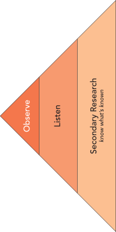

4 Explore the Community
Ethnographic exploratory experiments to gain experience and insights into the lives of your people
Unearthing Unmet Needs
 After choosing and confirming access to a community of people, the journey of entrepreneurial innovation continues with an in-depth exploration of their lives. This chapter focuses on ethnographic exploratory experiments—our deliberate move into divergent thinking—aimed at amassing a “mountain of data” about your chosen community. At this stage, the emphasis is on extensive evidence gathering through both primary and secondary research. You are not merely collecting anecdotes; you are running exploratory experiments—structured forays into lived experience—to surface pains that are real but often unarticulated.
Secondary research will help you triangulate what you learn in the field so you don’t waste time re-learning what is already known.
One innovation team thought they understood the pain in auto body repair. Customers hated long delays and unpredictable updates while their cars were in the shop. The problem seemed obvious: fix customer communications.
Then they spent time inside a repair shop. While waiting in the office, a burst of shouting echoed from down the hall. Instead of ignoring it, they followed the sound and found a technician furious at the tedious process of moving information back and forth with insurance adjusters. Estimates had to be re-typed into one system, then again into another, with errors compounding at each step.
In that moment, the team realized the real bottleneck wasn’t customers waiting for news—it was employees drowning in broken data flows. By listening for emotion and tracing frustration to its source, they uncovered a more valuable, systemic pain: the brittle exchange of information between insurers and shops.
This is the essence of ethnographic exploration. We may go in expecting one kind of problem, but if we stay curious and follow emotion, we uncover pains hidden in plain sight. The methods that follow—conversation as guided storytelling, observation and shadowing in context, role play as embodied empathy, and carefully targeted surveys—are the tools for creating these moments of discovery. Alongside them, secondary research broadens and triangulates what you learn in the field so you avoid spending time re-learning what is already known.
As you work, watch the “information entropy” of your findings. When new stories keep surprising you, keep exploring. When new data starts repeating what you already know, you’ve reached the edge of your current map. That’s the moment to shift from divergence into abductive synthesis and begin the converge work of themes, personas, and experience maps.
Finding and Engaging Your People
Now that you’ve selected your community and confirmed access in principle, the next challenge is practical: where do these people actually gather, and how do you engage them in a way that leads to real exploration? Treat this step as an access experiment: you’re testing which channels, places, and approaches reliably put you inside their world so you can run ethnographic, exploratory experiments (conversation, observation, shadowing, role play) that build your mountain of data.
Show Up Where They Are (Physical Contexts)
- Map the day-in-the-life. List places and times your community naturally congregates (worksites, clinics, gyms, trade counters, meetups, shops, service desks, transportation hubs). Prioritize locations with high density + high dwell time.
- Respect gatekeepers. Identify who controls access (managers, front-desk staff, community leaders). Prepare a concise, respectful ask: who you are, what you’re studying, how long it takes, and what participants gain (voice, learning, small thank-you).
- Observe before you approach. Spend 10–15 minutes watching flow, queues, and rhythms. Enter at the least disruptive moment. Note visible frustrations or workarounds you might probe later.
- Start with low-friction intercepts. A simple opener: “I’m studying how X gets done here—could I ask two quick questions now, or schedule 15 minutes later?” Offer a QR card or short link to book time.
- Earn permission for deeper immersion. If the first chat is productive, ask for a follow-on exploratory experiment: shadow a task, watch a handoff, review artifacts (forms, screenshots), or co-walk the space.
- Bring a leave-behind and a follow-up plan. Share contact info, a 1–2 sentence description of the study, and how you’ll use what you learn. Schedule next steps while the rapport is warm.
Engage Where They Gather Online (Digital Contexts)
- Find domain-centric communities. Look for forums, subreddits, Discord/Slack groups, professional associations, Facebook/LinkedIn groups, and niche platforms specific to the craft or role.
- Evaluate group quality. Prefer communities with active moderation, recent posts, and discussion depth. Skim the last 50 posts to spot recurring pains and the group’s tone.
- Introduce yourself with value. Post a brief intro: what you’re exploring, who you want to hear from, the time ask, and what participants get (e.g., early findings summary). Avoid selling or hinting at solutions.
- Use light-touch prompts. Run a 1–2 question poll or ask “last time” prompts (e.g., “What was the last time X really frustrated you?”). Invite DMs for private stories.
- Move from public to private thoughtfully. After a comment exchange, invite a short call or asynchronous Q&A. Provide a scheduler and options across time zones.
- Bypass personal-network bias. Do not rely on friends/classmates. Seek practitioners and decision-makers inside the community, not adjacent observers.
- Convenience over relevance: recruiting whoever is nearby rather than those who live the pain daily.
- Platform monoculture: using only one channel; diversify physical and digital touchpoints.
- Too-broad groups: “small business owners” instead of a specific role + context (e.g., collision estimators at independent body shops).
- Gatekeeper dead-ends: not preparing a clear, respectful script and small value exchange to earn access.
- Survey-first reflex: launching a survey before you’ve heard stories; start with conversations and observation.
- Extractive tone: asking for time without giving anything back (learning, summary, shout-out, or scheduling around their constraints).
- Pitching too soon: discussing solutions in first contact; stay in exploration mode.
Avoiding these traps clears the path for authentic engagement. But clarity about what not to do is only half the battle; here’s a practical checklist to help you move forward with confidence.
Ethnographic Exploration
Once you have found and engaged your people, the next step is to immerse yourself in their lived experience. Ethnographers use many tools, but four stand out as especially powerful for entrepreneurs: conversations, observation, role playing, and surveys. Each is not just a technique but an exploratory experiment — a structured way to surface evidence of unmet needs.
Conversation
Conversations are not casual chats — they are guided storytelling experiments.
When you invite someone to share their experiences, you are deliberately probing for patterns in how people live, what frustrates them, and where needs are unmet. Done well, these conversations move beyond surface opinions to uncover the rich, emotional stories that anchor entrepreneurial insight.
But don’t ask people, “What do you need?” — they usually can’t answer. Instead, people reveal their struggles through stories. Your job is to guide those stories toward moments of frustration, emotion, or workaround. That is when unmet needs surface.
Use a conversation guide. Prepare open-ended prompts (e.g., “Tell me about the last time you…”), but stay flexible. Your goal is not a script but a framework to keep the dialogue flowing.
How to run the experiment (short form)
- Prepare a light interview protocol — a few “last time” prompts, not a long script.
- Meet people in their context (kitchen, workshop, office, shop floor).
- Encourage storytelling: “Tell me about the last time you…”
- Listen for emotional spikes — frustration, embarrassment, delight.
- Probe gently: “What made that difficult?” “What did you do next?”
- Capture notes and stories; debrief with your team immediately after.
Success measure: when people forget they are being “interviewed” and simply tell you their story, you are doing it right.
There’s no fixed number. Early on, every conversation reveals new stories (high information entropy). Keep going until stories begin to repeat and new interviews add little that’s novel. That’s your signal to pause and move into convergence.
Toolkit Resource
See the Conversation Guide for a ready-to-use protocol, sample prompts, and a notes template.
Observation
Observation is not passive watching — it is an experiment in context.
Sometimes the most powerful insights come not from what people say, but from what they do. By placing yourself where people live, work, or struggle, you see routines, interactions, and workarounds unfold in their natural setting. Done well, observation reveals unspoken needs and patterns that conversations often miss.
Look for moments of friction. When people improvise, complain under their breath, or devise a workaround, they are revealing unmet needs in action.
How to run the experiment (short form)
Choose a setting where your community naturally gathers (gym, café, clinic, workplace, trade counter, online forum).
Blend in: be present without becoming the center of attention.
Take structured notes on behaviors, contexts, and interactions before interpreting them:
- What are they doing? (observable facts)
- How are they doing it? (effort, workarounds, emotion)
- Why this way? (informed guesses about motives and constraints)
- What are they interacting with? (people, tools, systems, spaces)
- What is absent? (who is missing, which steps are skipped, or what resources are absent)
- What are they doing? (observable facts)
Watch for workarounds, repeated frustrations, hesitations, delays, and subtle rituals that hint at unmet needs.
Success measure: when you can describe how a day actually unfolds for your community, not just what they say about it.
Enter through a natural artifact or activity. For example, a Shakespeare reading group brings seniors together around the play, but the real learning comes from the informal conversations and behaviors that follow. Anchor yourself in the activity; the observation will flow naturally.
Toolkit Resource
See the Observation Guide for a ready-to-use guide on how to observe and how to record your observations.
Role Playing
Role playing is not theater for its own sake — it is an experiment in simulation.
By enacting real or imagined scenarios, you and your participants surface hidden reactions, tacit knowledge, and unspoken assumptions. Role play creates a safe space to test how people might behave in situations that are rare, risky, or difficult to observe directly.
Use role playing to reveal what people cannot easily articulate. It often exposes emotional responses, social dynamics, and decision shortcuts that surveys or conversations miss.
When to use role playing
- To simulate situations that are hard to observe in the wild (e.g., emergencies, negotiations).
- To uncover emotional reactions or group dynamics around a scenario.
- To test prototypes or service concepts in a “lived” context before building them.
Design principles
- Ground the scenario in realistic detail (context, roles, stakes).
- Encourage participants to stay “in character” but debrief afterwards.
- Observe both behavior and language — especially moments of tension or improvisation.
- Keep the setup simple so the focus stays on people, not props.
Success measure: When role play reveals responses, workarounds, or tensions that people themselves did not realize they carried, the experiment has done its job.
Worked Example
Designer Patty Moore once simulated aging by wearing a body brace, earplugs, blurred glasses, and a wig over months of immersion. She discovered not only the physical challenges of opening pill bottles and climbing buses but also the social reality of how others treated her differently.1
Toolkit Resource
See the Role Play Guide for a ready-to-use guide on how to setup, run, and interpret a role playing experiment.
Surveys
Surveys are not just questionnaires — they are structured experiments in convergence.
Once you’ve uncovered pains and themes through conversations and observation, surveys let you measure prevalence, compare subgroups, and begin quantifying what matters most.
Use surveys to validate, not to explore. They are powerful once hypotheses exist, but too blunt to discover fresh insights on their own.
When to use surveys
- To validate and rank insights gained from conversations and observation.
- To measure how widespread frustrations are across a population.
- To gather input from communities you cannot easily observe or interview.
Design principles
- Use open-ended prompts sparingly but strategically (e.g., “What is the hardest part of X?”).
- Include ranking or rating scales to gauge relative importance.
- Pilot-test questions to catch bias or ambiguity.
- Keep them short and focused — long surveys rarely yield thoughtful responses.
Success measure: When your survey sharpens which pains matter most and how widespread they are, the experiment has done its job.
Toolkit Resource
See the Survey Guide for a ready-to-use guide on survey design principles and traps to avoid.
Together, these four exploratory experiments — conversations, observation, role playing, and surveys — build the mountain of data you need. Each generates different kinds of evidence, but all share a common purpose: uncovering unmet needs that remain invisible until you engage, watch, feel, and measure. Together, they create the mountain of data you need — but how do you know when that mountain is high enough?
Archival and Secondary Research Experiments
Not every insight comes from fieldwork. Much is already known — in industry reports, government statistics, academic studies, and trade publications. Secondary research is your way of running exploratory experiments with data others have already collected. Each probe into an archive or database is a test: “What does this source reveal, and how does it align with or challenge what I’ve seen in the field?”
The key principle: if it is already known, don’t rediscover it through interviews or observation. Mine existing knowledge so you can focus your primary exploration on what is still unknown.
What Secondary Research Contributes
- Customer insights: demographics, preferences, usage patterns, and emerging behaviors.
- Market analysis: product landscapes, market shares, and total addressable market.
- Competitor analysis: who else is addressing your space, and how.
- Industry trends: technological shifts, regulatory moves, cultural currents.
Secondary research rarely reveals unmet needs directly. But combined with ethnographic exploration, it frames the opportunity landscape and sharpens your hypotheses.2
Open and Free Sources
- Government and public data: portals like USA.gov or the US Census.
- Search trends: Google Trends shows what people are looking for, when, and where.
- Global indicators: Gapminder for worldwide demographic, health, and social data.
- Business press and consulting insights: sources like Harvard Business Review, Forbes, or consulting firms (e.g., BCG, McKinsey).
For a more comprehensive collection of open and free sources of secondary data, explore these public data sources.
Proprietary and Paid Sources
Some of the richest insights live behind paywalls: databases like Factiva, Mintel, or Euromonitor. While costly for startups, many universities and libraries provide access. At BYU, for example, the Harold B. Lee Library maintains a database index curated for entrepreneurial innovation projects.
For a more comprehensive collection of open and free sources of secondary data, explore these private data sources.
- Start with it — scan existing knowledge before entering the field, so your primary research targets what isn’t already known.
- Use it to triangulate — compare published findings with what you hear and see in context.
- Treat it as experiment design — each search is a probe: “If I look here, what will I learn?”
- Document both findings and absences — what you expected but didn’t find can be a clue.
Toolkit Resource
See the Secondary Research Guide for a ready-to-use guide on what information to seek and where to look.
In short, archival and secondary research experiments widen your vision. They prevent reinventing knowledge, situate your field insights in broader context, and strengthen confidence that the pains you uncover are real, significant, and shaped by larger trends.
At some point, though, both fieldwork and desk research begin to repeat themselves. The real question becomes: when is the mountain of data high enough? That’s where the principle of “enough is enough” comes in.
When Enough Is Enough
Exploration can feel endless. There is always another person you could interview, another setting to observe, or another report to read. But at some point, the return on effort drops. The signal to stop is not exhaustion or impatience. It is the decline of information entropy — the rate of newness in what you learn — that is your signal to stop gathering and move into abductive hypothesizing (sense-making).3.
At the beginning, every conversation, observation, or article adds something novel. Over time, surprises become rarer, and new inputs mostly echo what you have already heard or read. This flattening of novelty is your cue: the mountain of data is high enough. You are no longer climbing higher, just circling the same slope.
Stopping does not mean you know everything. It means you have reached the point where you know enough about your people to generate informed hypotheses about their needs.
Rule of thumb
- If most new conversations yield no fresh themes, stop.
- If additional observations only confirm existing patterns, stop.
- If reports and databases repeat the same facts, stop.
Entrepreneurs often struggle here. Quitting too early risks thin data and shaky insights. Quitting too late risks delay and wasted effort. But when novelty fades, and repetition dominates, the exploration phase has done its work. It is time to move from gathering to reasoning — from raw discovery to shaping hypotheses that can be tested.
In short, the goal of exploratory experiments — whether in the field or in the archives — is not to collect every possible fact but to reach the point where additional data stops changing the picture. At that moment, you are ready to shift from divergence into convergence and move toward isolating the pains that matter most.
The Essence of Exploratory Research
Exploratory research is not about confirming what you already know — it is about broadening your field of vision. Its essence is curiosity: stepping into conversations, watching behavior in context, simulating lived experience, and mining what is already known in archives and reports. Each method — whether an interview, an observation, a role play, a survey, or a scan of existing data — is an exploratory experiment designed to surface unmet needs that would otherwise remain invisible.
What matters most is not mastering every method, but assembling a diverse stream of evidence. Stories, observed workarounds, simulated frustrations, survey rankings, and statistical trends each illuminate the problem space from a different angle. Taken together, they create a textured picture of people’s lives and the opportunities within them.
But exploration cannot be endless. The true art lies in knowing when the mountain of data is high enough — when novelty begins to fade, and it is time to shift from gathering to sense-making. Exploratory research gives you raw material; abductive reasoning and analysis turn that material into insight.
In short: the essence of exploratory research is open-ended curiosity, disciplined variety, and the judgment to stop collecting when learning plateaus. With that balance, you are prepared to move from exploration toward convergence and the identification of your most urgent unknown.
Patnaik (2009) tells this story in Wired to Care to illustrate how designers can create deep empathy through embodied simulation.↩︎
Ethington (2018) notes that while no single source can answer the entrepreneur’s core questions, triangulating across multiple studies helps reveal where unmet needs are most likely to emerge.↩︎
The concept of information entropy comes from Claude Shannon’s work in communication theory (1948). In this context, it refers to how much “surprise” each new piece of data brings.↩︎